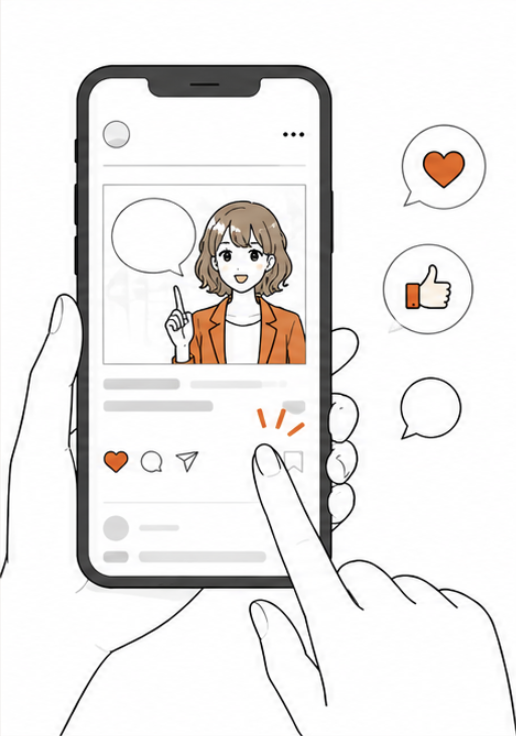
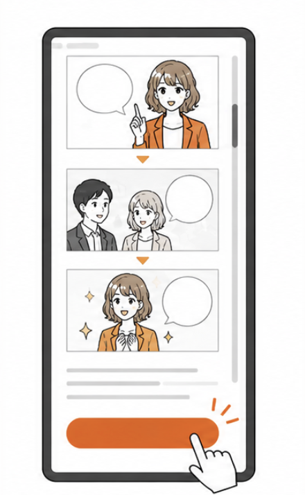
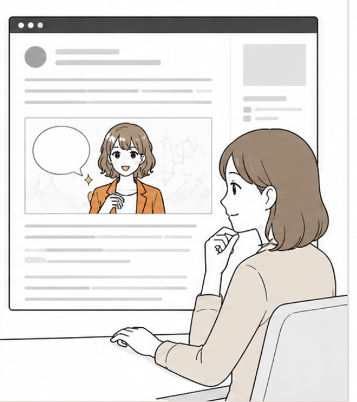
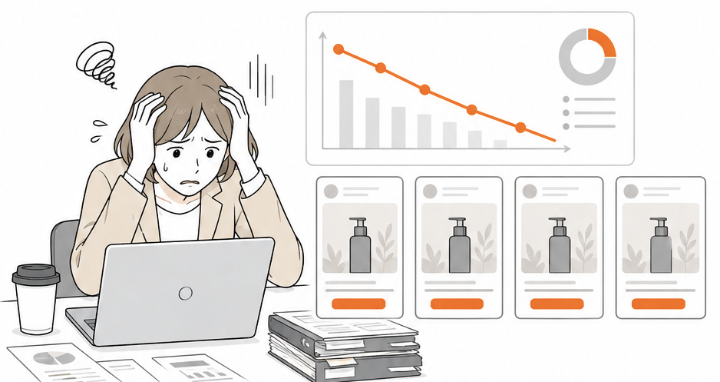
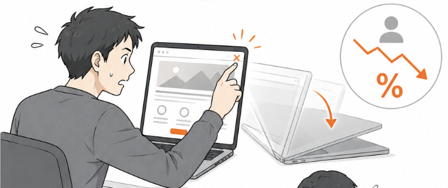
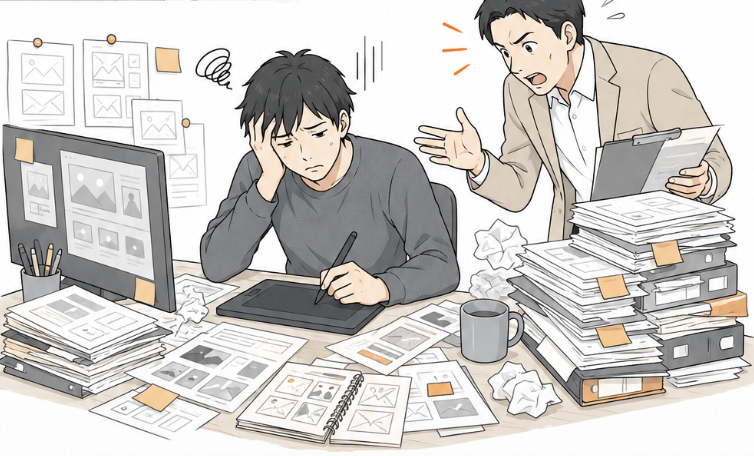
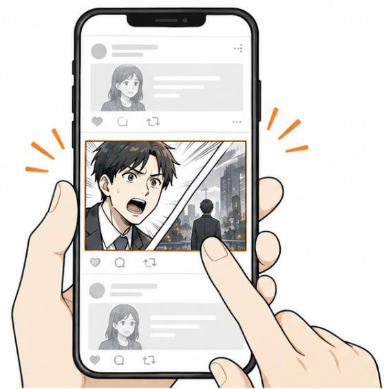
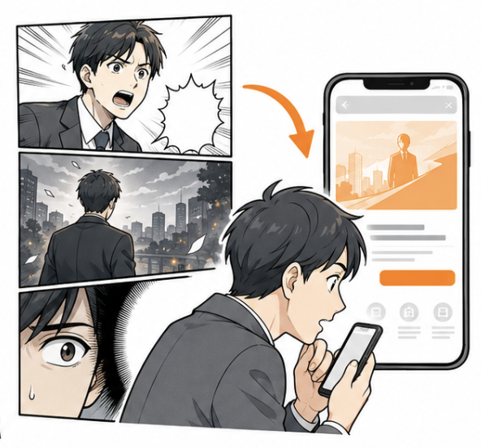
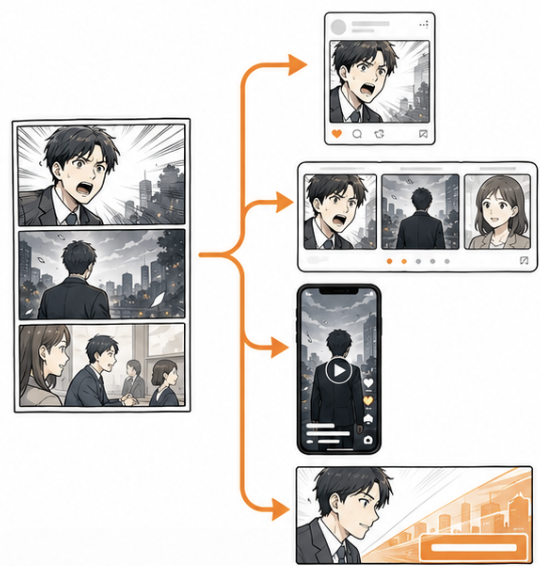
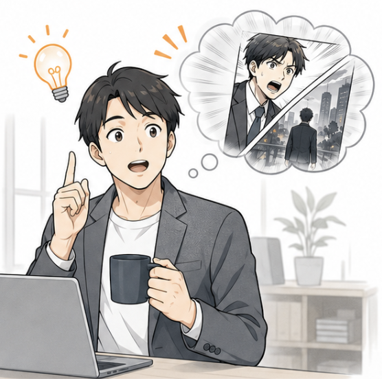

スクロールを止め、続きを読ませる。
マンガ広告・広告漫画（広告マンガ）の物語型クリエイティブで、CVへ運びます。
広告枠とLPの両方で活躍。
-

SNS広告
Social Adスクロールを止めるクリエイティブ
Meta・X・TikTok・LINEなど、主要SNS広告枠の縦型クリエイティブとして活用できます。広告漫画（マンガ広告）の1コマや短いストリップは、テンプレ化した動画・画像広告と並んだとき「異質な存在」として認識され、ユーザーの指を物理的に止めます。
1本のマンガから、1コマ抜粋・カルーセル・縦型動画など複数の派生クリエイティブを生成可能。CTRが半減した広告アカウントで、漫画クリエイティブだけ単独でCTRが2〜3倍になった事例も多数あります。
-
Web広告
Display & Nativeバナー・記事広告で読まれる
Yahoo!ディスプレイ広告・GDN・記事広告（タイアップ記事）の本文中に漫画を配置すると、テキスト主体の記事広告と差別化でき、最後まで読まれる確率が大幅に向上します。
記事広告では「読了率」が広告効果の核になりますが、漫画コンテンツを挿入すると平均読了率が1.5〜2倍に伸びることが確認されており、CV単価の改善にも繋がります。
-

LP漫画
Landing Page直帰率を下げ、CVRを上げる
LPのファーストビュー直下に「導入前の悩み→使った瞬間→導入後の変化」という三幕構成の漫画を配置すると、訪問者は「絵を眺める」感覚で自然にスクロールします。直帰率が下がり、CVRが向上します。
導入企業では、漫画を入れる前後で平均滞在時間が2.3倍、CVRが1.4〜2.1倍に改善した事例があります。広告クリック後の取りこぼしを最小化できる、最も即効性の高い活用方法です。
-

アフィリエイト
Affiliate記事LPの読了率を上げる
アフィリエイト・記事LPでは「最後まで読まれること」が成果に直結しますが、長文テキストは離脱率が高くなる傾向があります。冒頭〜中盤に漫画パートを差し込むと、読了率が大幅に上がります。
「マンガ→ストーリー型レビュー→比較→CTA」というLP構成は、医薬品・健康食品・美容・教育商材のアフィリエイトで特に効果が高く、CV率の底上げが見込めます。
PROBLEM
広告担当者の、こんなお悩み。
-

広告クリエイティブが飽和し、CTRが下がり続けている。
動画も画像も、配信し始めて数週間でCTRが半減する。新しい素材を作っても効果がすぐ落ちる。CPM高騰の中で、毎月の広告ROIが目減りしている。
Meta広告・X広告・TikTok広告いずれのプラットフォームも、クリエイティブの飽和が深刻化しています。同じテンプレートの動画・写真・テキスト広告が並ぶ中で、ユーザーのスクロール指は無意識に「広告らしいもの」を弾いていきます。新クリエイティブを投下してもCTRが2〜3週間で半減する状況は、もはや業界標準と言えるレベルです。
マンガ広告（広告漫画・広告マンガとも呼ばれる）は「広告らしくない異質さ」が最大の武器です。漫画の1コマは、広告枠の中で「どこかの記事の引用」のように見えるため、ユーザーが警戒せずにスクロールを止めます。広告らしさを脱ぎ捨てた瞬間、CTRが大きく伸びる事例が多数あります。
-

広告でクリックを獲得しても、LPで直帰される。
LPのファーストビューを変えても、コピーを変えても、直帰率が下がらない。ABテストを続けても改善幅が小さく、根本的な突破口を探している。
LPの直帰率が高止まりする最大の要因は、「読み始めるハードルの高さ」です。広告でクリックしてLPに飛んだ瞬間、ユーザーは「これは長そうだ」「結局何のサービスか」を数秒で判断し、読まれる前にスクロールアウトされます。
LPの冒頭にストーリー型のマンガを配置すると、ユーザーは「絵を眺める」感覚で自然と読み進めます。読了率が上がるため、商品の本質的な価値や差別化ポイントを最後まで届けられ、結果としてCTAボタンへの到達率と押下率がともに改善します。導入企業では平均滞在時間が2.3倍、CVRが1.4〜2.1倍向上した事例があります。
-

毎月のクリエイティブ供給に、制作リソースが足りない。
広告は鮮度勝負。週1〜2本の新クリエイティブを継続的に作りたいが、社内デザイナーも外部パートナーも稼働がパンパン。安く・速く・効く素材が欲しい。
広告運用の最大の悩みは、クリエイティブ供給コストの増大です。CTRが落ちる速度に対して、新クリエイティブの制作スピードが追いつかないため、結局同じ広告を回し続けて疲弊させてしまうサイクルに陥りがちです。
マンガ広告は「1本作れば多数の派生クリエイティブを生成できる」点が経済的メリットです。1本の漫画から、SNS用1コマ抜粋・カルーセル投稿・縦型動画・ディスプレイバナーなど10〜20パターンを派生制作できるため、月次のクリエイティブ供給コストを年間ベースで30〜50%圧縮できる可能性があります。
その悩みは、
「マンガ広告」で解決できます。
MERIT
マンガ広告の、4つの強み。
-

「広告らしくない」から、スクロールが止まる。
他の広告と同じ枠に並んだとき、漫画の1コマは「記事の引用」のように見えます。ユーザーの広告ブロック心理を回避し、視線を獲得できます。
SNS広告のCTR低下の根本原因は、ユーザー側の「広告ブロック心理」です。テンプレ化された動画・写真は0.3秒で「広告」と判別され、視線をすり抜けていきます。
マンガクリエイティブは、その判別ロジックの隙を突きます。漫画は「ユーザーが普段から好んで読むコンテンツ形式」のため、広告枠でもナチュラルに視線を引きつけ、結果としてCTRが他フォーマットを上回る傾向があります。
-

「続きが読みたい」心理でLPに引き込める。
広告枠で物語を「途中まで」見せ、LPで「続き」を読ませる導線を作れます。クリックの動機が「興味」になるため、LP直帰率も低くなります。
従来の広告は「クリックさせる」ことに最適化されていますが、クリック後のLP直帰でCV機会を取りこぼすケースが大半です。これは、広告クリックの動機が「興味本位」ではなく「煽り・割引・偽情報」に偏っているからです。
マンガ広告は、物語の途中で「続きはLPで」と誘導できるため、クリックの動機が純粋な「興味」になります。LPに到達したユーザーは続きを読みたいモードで来訪するため、LP直帰率が低く抑えられ、結果としてCV単価が改善します。
-

1本作れば、10〜20パターンの派生が生まれる。
本編から1コマ抜粋・カルーセル・縦型動画・LPバナーなど、用途別に切り出せます。月次のクリエイティブ供給コストを大幅圧縮できます。
広告運用では、CTRが落ちる前に新しいクリエイティブを投下する「クリエイティブの供給速度」が鍵です。マンガ広告は1本の本編から、媒体ごと・用途ごとに10〜20パターンの派生クリエイティブを切り出せるため、ABテストの回転速度が大幅に向上します。
結果として、年間ベースで見るとクリエイティブ単価が大幅に下がり、運用工数も削減されます。広告代理店任せだったクリエイティブ制作を、自社の「資産」として蓄積できる構造的なメリットもあります。
-

物語性で記憶に残り、後日CVに繋がる。
広告接触の瞬間にCVしなくても、登場人物の印象とともに「あの会社」として後日想起されやすくなります。指名検索の伸びにも貢献します。
広告効果は「クリック」「即CV」だけでは測れません。広告接触から指名検索までの「想起率」が、中長期のCV単価を大きく左右します。一般的な広告クリエイティブはユーザーの記憶に残らないため、想起率が低く、結果として広告依存から抜け出せない構造になりがちです。
マンガ広告は登場人物の感情とともに記憶される「ストーリー型コンテンツ」です。広告接触から数週間〜数ヶ月後に「あの会社、どうだったかな」と想起されやすく、指名検索や直接訪問が増える効果が観測されています。広告予算を増やさずにオーガニックCV比率を高められる、長期投資型のクリエイティブです。
CASE STUDY
制作事例
マンガ広告として実際に納品した事例から、抜粋してご紹介します。

バズフェス
クライアント: ライフエンターテイメント／媒体: イベント告知 / SNS広告
イベントの魅力と参加メリットをストーリー形式で訴求。ターゲットの"自分ごと化"を促す構成で集客力を最大化。
「漫画広告を使った告知で、前回比150%の集客を達成できました。」この事例を詳しく見る →

ASOBI SYSTEM×きゃりーぱみゅぱみゅ
クライアント: ASOBI SYSTEM／媒体: 提案資料 / SNS
ASOBI SYSTEMとの共同企画。きゃりーぱみゅぱみゅをモチーフにしたキャラクター漫画で、IPコラボレーションの可能性を提案。
「キャラクターの魅力が漫画で十分に表現されており、コラボ企画の説得力が増しました。」この事例を詳しく見る →
FROM BIZ LIBRARY
マンガ広告を、実際に読んでみる。
クライアント企業向けに制作したマンガ広告・LP漫画を、ビズ書庫から抜粋して掲載しています。タップ／クリックすると、全画面のビューアで作品を読めます。
読み込み中…
PRODUCTION FLOW
マンガ広告の制作フロー
ヒアリングから納品まで、8つのステップで進行します。各ステップをクリックすると、左の編集者ノートに参考画像と詳しい解説が表示されます。
FAQ
マンガ広告についてよくあるご質問
お問い合わせ前に解消しておきたい疑問を、編集担当目線でまとめました。ここに無いご質問はお気軽にお問い合わせください。
制作期間はどのくらいかかりますか？
標準的な10ページ構成で約4〜6週間です。ヒアリング1週間・構成と脚本2週間・ネーム1週間・作画2〜3週間・修正と納品1週間が目安。お急ぎの場合は短縮プランもご相談可能です。
費用の相場はいくらですか？
1ページあたり15,800円〜（基本プラン）。10ページ構成で約17.4万円〜が目安。本数割引・オプション・カラー対応など詳細は料金ページをご覧ください。明朗会計で見積書を即日お届けします。
修正は何回まで対応していますか？
ネーム段階で1回・作画段階で1回が標準で、合計2回までが基本プランに含まれます。ネーム段階で構成や演出をしっかり擦り合わせるため、作画後の大幅修正は通常発生しません。
著作権・使用範囲はどうなりますか？
完成原稿の使用権はクライアント様に帰属します。Web・印刷・SNS・動画化など複数媒体での使用が可能です。二次利用や買取りについても柔軟に対応しますのでご相談ください。
機密保持契約（NDA）には対応していますか？
対応可能です。お見積もりや初回ヒアリング前にNDA締結いただけます。新製品・未公開キャンペーン・採用情報など、機密性の高い案件も多数の実績があります。
英語版・多言語版は作れますか？
対応可能です。日本語で制作した作品の英語ローカライズはもちろん、中国語・韓国語・タイ語など多言語展開もネイティブ校正付きで承ります。インバウンド・海外IR用途で実績があります。
Meta・TikTok・LINE・Yahoo!などSNS広告の入稿規格に対応していますか？
各媒体の最新仕様に合わせて納品します。Meta(1:1/4:5/9:16)・TikTok(9:16)・LINE NEWS・Yahoo!ディスプレイなど、サイズ・尺・ファイル形式・テキスト比率規制まで含めて対応。広告審査通過率を意識した表現調整も可能です。
1本制作して複数の広告クリエイティブに展開できますか？
可能です。同一ストーリーから抜粋・組み替え・末尾差し替えで10〜20パターンの派生クリエイティブを作成し、A/Bテスト前提の運用に最適化します。媒体ごとにゼロから作り直す必要はありません。
広告審査で却下されないよう表現調整できますか？
対応可能です。Meta（旧Facebook）、Google広告、TikTok、LINE、Yahoo!の各媒体審査基準を熟知した編集担当が、誇大表現・薬機法・景表法・身体特徴の誇張などを事前回避します。テスト出稿で審査通過確認後の本納品も対応。
LP本体と広告クリエイティブを同時制作する場合の費用は？
セット割引でお見積もりします。広告→LPの体験を一気通貫で設計でき、CVR最適化が最大化されます。広告10〜20パターン+LP1本+SNS抜粋の同時制作も対応。
動画広告化（コマ送りアニメーション）は対応できますか？
対応可能です。静止画コマ送り・ナレーション付与・BGM・SE・テロップアニメまで対応。TikTok 9:16縦動画、Meta Reels用、YouTube Shorts用など、媒体別に最適化した尺・サイズで納品します。
CTR・CVR改善の具体的な改善幅はどれくらいですか？
業種・媒体・既存クリエイティブの状況により異なりますが、漫画クリエイティブ導入企業様ではCTR/CVR向上の事例が報告されています（自社実績調査ベース）。出稿前後のKPI変動の測定方法もアドバイス可能です。
届けたい広告があるなら
その先の物語を
一緒に描きましょう
広告運用チームと連携した「効くクリエイティブ」を企画から納品まで設計します。30分の無料相談で、現状のCPA・CTR・CVRに対する打ち手と、最適な漫画クリエイティブの構成・本数・予算感をご提案します。発注義務はありません。